住宿 洞爺湖 Lake View Private Log House
2024年8月22-23日
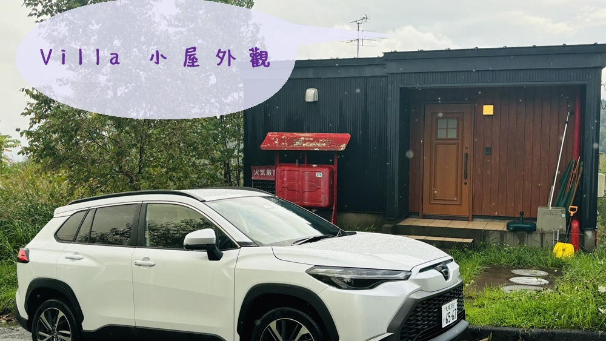
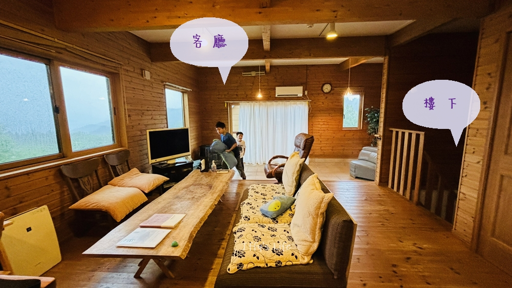
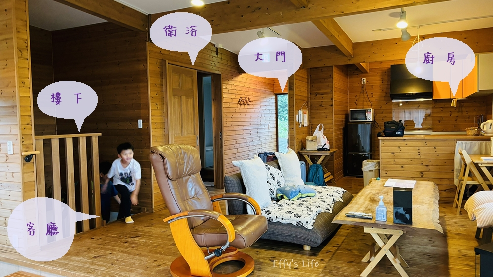
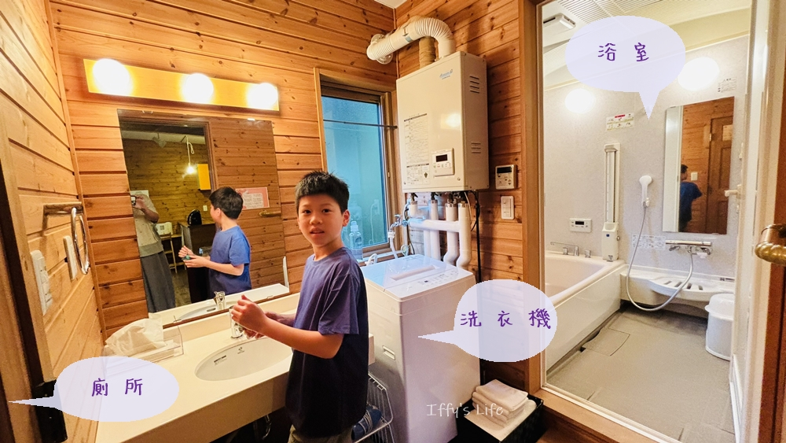
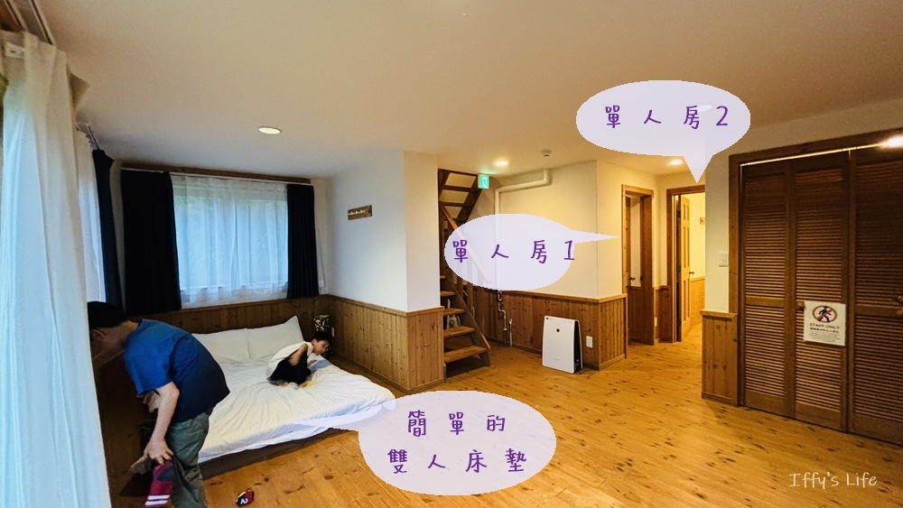
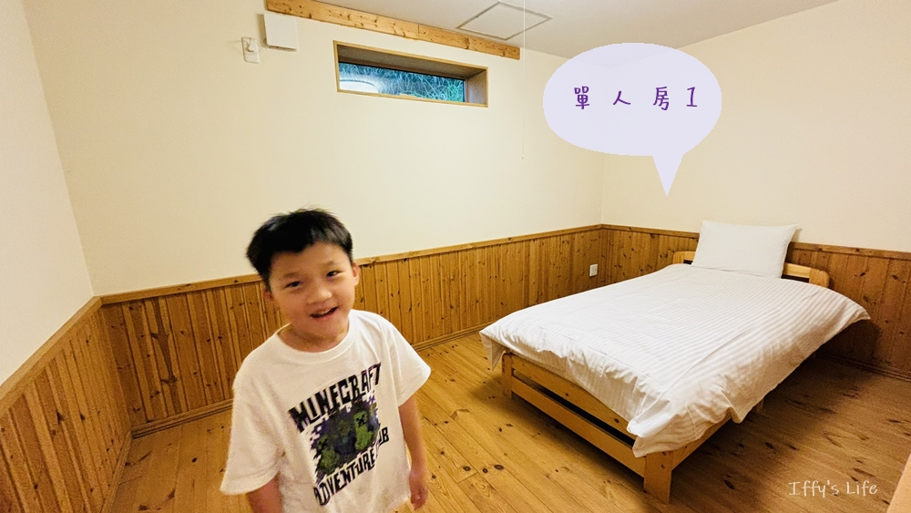
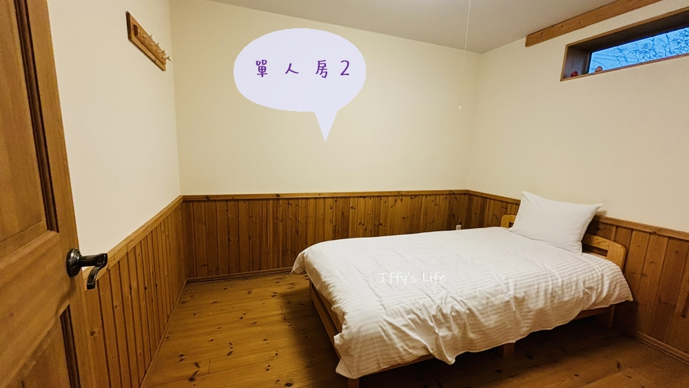
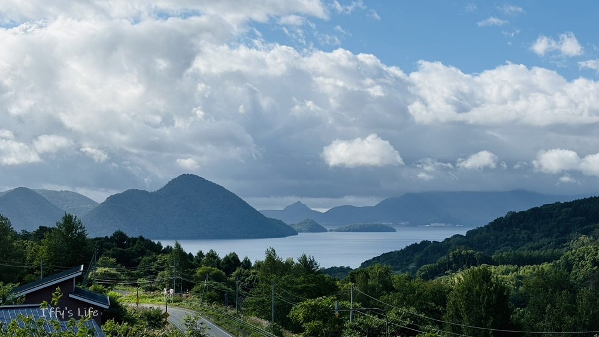
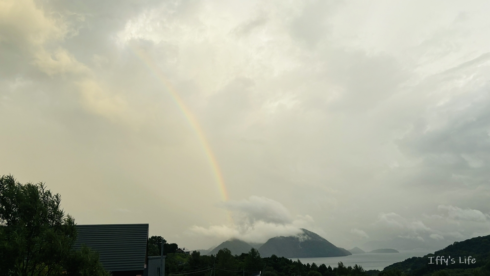
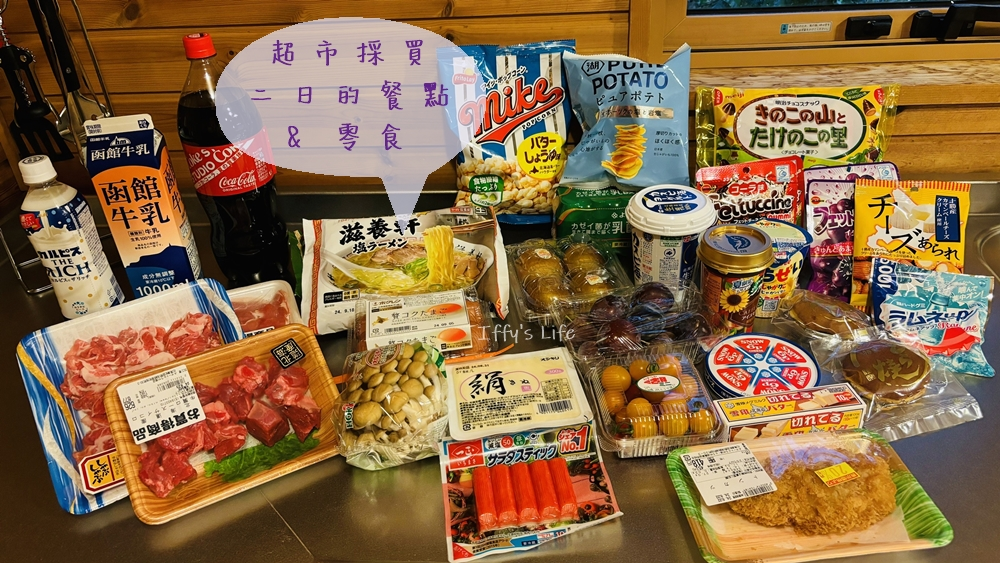
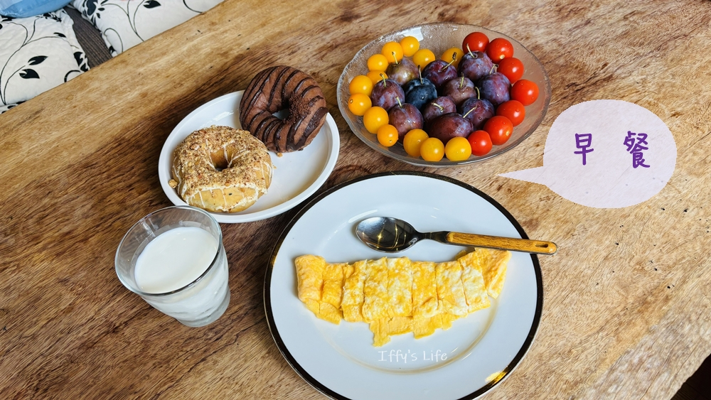
- 住宿日期：2024/8/22、23
- 訂房方式：Booking
- 房型：三臥室 Villa
- 房價：￥59648/2 Days
洞爺湖的住宿非常晚才確定，因為很難取捨到底要住什麼level的飯店，面湖的溫泉飯店都非常昂貴，雖然網友都非常推薦像是"乃之風"、"湖之栖"、"太陽宮"、"萬世閣"等，
這些溫泉飯店的賣點就是：房間都面湖，在房間就可以看煙火、露天浴場都是面湖，可以泡著溫泉看煙火，甚至是房間內就有浴缸，可以邊跑澡邊看煙火。
但是暑假期間，四人房一晚逼近二萬台幣。我們要住兩晚，實在很難訂下手，原本考慮要不要一晚住貴的，一晚住便宜的，反正看煙火就走到外面看就可以，不一定要在飯店裡，
但又覺得要換旅館很麻煩就先排除此一選項。原本考慮一家評價非常不錯的hostel -
The TOYA。 但又覺得房間太小，還是想住舒服一點，也被我默默排除。後來訂了
"洞爺觀光酒店"，沒有錢面幾家那麼高級，但也是面湖的房間，價格我覺得便宜很多，是可以接受的範圍(我當時以為二晚四萬多日幣)。結果在出發前一個星期左右，
原本沒有想要列印住宿資訊的我，突然想說還是來蔭一下好了，以防如果手機連不上網路，無法打開app上的訂房頁面會很麻煩。結果....還好我有一一印出來！在確認每天訂房資訊時，
赫然發現"洞爺觀光酒店"其實只訂了一天！只訂了一天！只訂了一天！！嚇死我！難怪覺得這家飯店怎麼比別人便宜這麼多！只好趕緊重新找住宿！這次直接捨棄湖邊飯店，
想說我們自駕，住離溫泉旅館區遠一點的地方也沒關係，晚上看煙火再開車過來看即可，所以最後定了這家
Lake View Private Log House。距離熱鬧的溫泉旅館區，開車大概15分鐘的地方，比較靠近洞爺湖水之駅休息站(超推這個休息站)的一個小山坡上，從客廳小陽台可以看到部分湖景。
採自助入助，訂房後需要上傳旅客護照，之後會收到房子的密碼，自行入住，十分方便。
進門後大為驚嘆，這 Villa 也太讚了吧！空間非常寬敞、明亮！窗外可以看到洞爺湖景。第一檢查浴室有沒有洗衣機！ 太好了，有洗衣機，再來檢查廚房有哪些廚具跟餐具，
太好了，廚具餐具一應俱全！一掃在旭川住到什麼都沒有的公寓式房型陰霾。(旭川住宿在這裡)小屋有上、下二層樓，
一進門是客廳、餐廳、廚房、小陽台，客廳跟陽台間還有一個大區域，我們的行李就放在這裡，還有晾衣桿跟衣架，洗完衣服之後晾在這裡，超方便。房間則是在下層，雖然是下層但也有大落地窗，
採光很好，看起來的規劃是客廳和兩個單人房間，客廳的一角放了一個簡單的雙人床墊，因為訂房時是選四人，所以這樣剛好是四個床位！不過如果是朋友一起來住的話，分配睡覺的地方就會有點尷尬啦！
因為客廳等於是一個開放的空間。只有兩間單人房是比較私密的。
第一天傍晚才抵達，抵達時正下著大雨。確定了有廚具和餐具之後，趕緊出發去洞爺湖車站附近的超市採買食物，準備這兩天的晚餐和早餐的份量，去年在富良野的民宿自己煮涮涮鍋和喇面的記憶太美好，
那時在超市買了牛、豬、羊三種肉回來，美一種都超好吃！這次也打算如法炮製，不過這次去的超市比較小一點，肉的種類沒有很多，看起來也普普~~ 除此之外也買了水果(番茄和李子)、
牛奶、優格、雞蛋等~~ 自己隨便煮煮，吃吃啦！
第二天下午又下了大雨，不過雨過天晴之後出現了彩虹！！之後就放晴了，隔天也是一個大晴天。
洞爺湖煙火
2024年8月22、23日
來到洞爺湖的其中一個一定要去看的就是 - 晚上的煙火秀啦！第一天晚上下著雨，阿光查了一下說，有人推薦另一個地方也可以看到煙火，離我們住的地方比較近，不用開到溫泉飯店那邊。
所以我們就開到某一個停車場，烏漆嘛黑所以我也不知道到底是哪裡，後來開始放煙火了，煙火出現在遙遠的右前方，坐在車裡會被前面的樹擋住，只好冒著風雨下車去看，因為距離很遠，
所以雖然看得到煙火，但是非常小，下著雨又颳風，超級冷，除了我們之外還有另一輛車也停在這裡，但是車裡的人沒有下來，所以只有我們一家在風雨中，瑟瑟發抖看遠方煙火，突然覺得有點淒涼😅。
允寶也說煙火太小了，不好看。
還好我們還有一天的機會，隔天晚上，便提早出發到溫泉飯店這邊，準備近距離的看煙火，下午來買漢堡時，發現隔壁幾家就是藥妝店(鶴羽)，便想著看煙火之前先來藥妝店逛逛，
但是在villa待得太舒服，忘記時間太晚出發，所以我們到的時候已經快8:30了，才逛沒一下煙火就差不多要開始了，因此只先大概買了我們超愛吃的鹽糖，和一款偏酸酸的軟糖，跟一些DHC，就趕緊結帳去湖邊看煙火了！
今天晚上沒下雨了（傍晚下了大雨，還看到彩虹，明天看起來是大晴天☀️），近距離看煙火真的震撼很多，允寶一直說近看好棒！雖然湖邊人也不少，但是應該有一大半的人都是在溫泉旅館的房間裡或旅館的露天溫泉看的吧！
所以湖邊道路沒有到很擁擠的狀態。我們卡著時間過去，還是可以輕鬆的站到自己喜歡的位置。
在台灣要近距離看煙火的話，應該都是要提早幾個小時到現場才進得去，結束後散場也會人擠人加塞車，不知何時才能回到住的地方。我印象最深的兩場煙火是大四還是研一的跨年，
跟實驗室學長姐在生科大樓頂樓看的學校跨年煙火，距離超近、超震撼，每個炸開的煙花都超大！至今印象深刻。另一個就是2009年和阿光去澎湖的花火節啦！那時好像沒現在那麼熱門，
機票還不會太難搶，住宿也不難訂，後來好像就變得超級熱門了。我們就沒再去過了。（後來拍婚紗跟生央央之前還有去過二次，但對煙火沒有特別印象耶，怎麼會這樣😅，只對第一次的澎湖煙火印象最深）
太陽皇宮飯店 Water Land
2024年8月23日
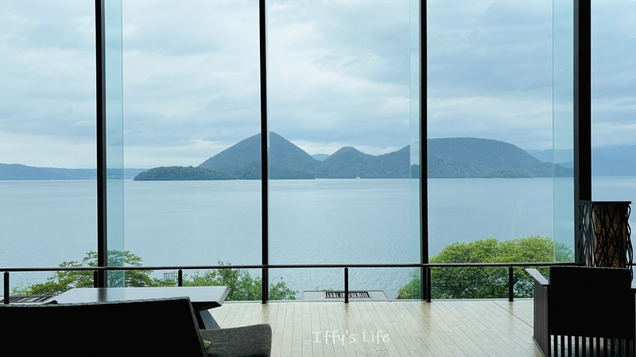
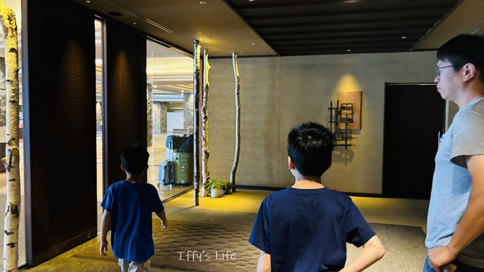
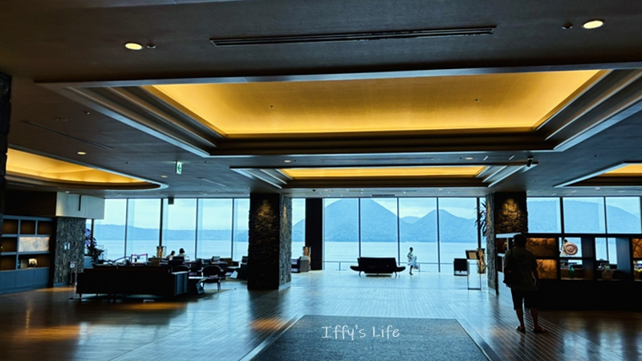
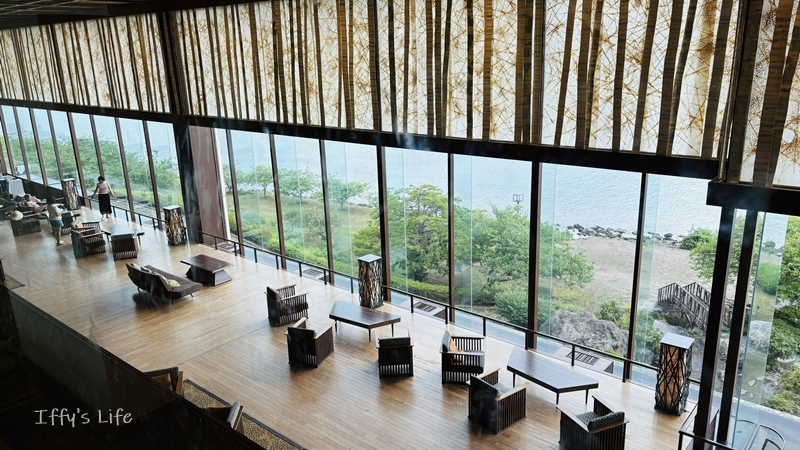
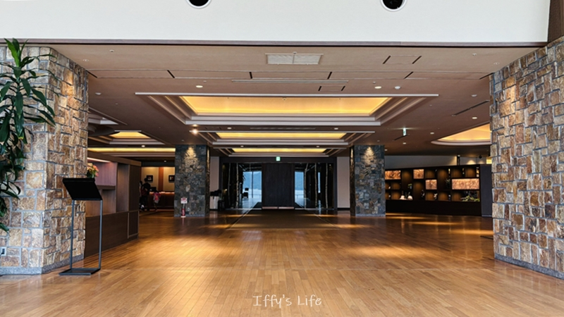
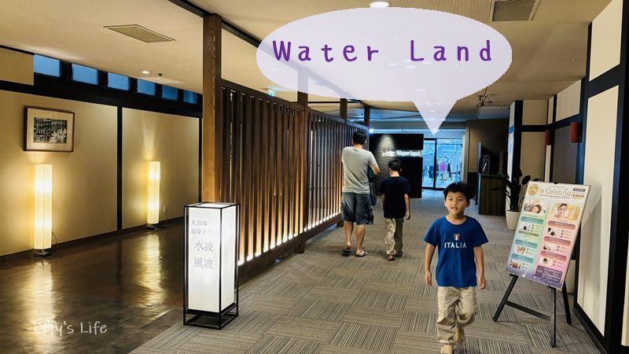
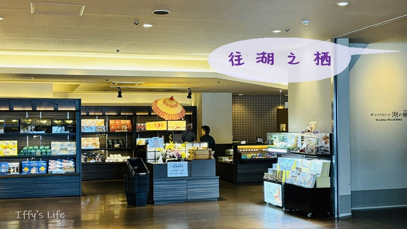
雖然沒有花大錢住在湖景飯店，便安排了"日歸溫泉"的行程，選的是
太陽皇宮 的Water Land，果然不負所望，超級好玩！！但因為禁止攝影，所以只拍了飯店大廳的照片，
想要看太陽宮的溫泉和水樂園，可以直接上
官網 去看，有詳細的介紹和美麗的照片。費用的話：大人是 ¥2000/人、小孩是 ¥1500/人，租借毛巾的費用是 ¥300/組。
Water land 的滑水道連我這個不是很愛的人都覺得超好玩的一玩再玩，水道有速度，重點是：最後不會一頭栽水裡，設計得很好！
入場後有一個大滑水道，是需要租用三人大浮圈才能去玩的，30分鐘 ¥500，這個也好刺激有趣！ 我們在30分鐘內完全不浪費一分一秒的狂玩。
人工造浪和飄飄池也很有趣，有免費使用的大虎鯨和魟魚的浮具，小孩or大人都可以趴在上面隨波漂浮，央和允寶也玩得超開心。
從11點玩到下午1點40，依依不捨的趕緊換到溫泉大浴池洗澡。溫泉很讚，露天溫泉直面湖景，超級美！室內溫泉有好幾個不同的spa池可以按摩，
還有一間超燙烤箱（央央最愛）和一池冷泉（允寶最愛），烤箱外面就有小桌子擺著超冰檸檬水供客人飲用，非常貼心。
洗澡的地方是這次住的幾間溫泉飯店中唯一有隔板的，另外吹頭髮的地方也是唯一有提供梳子的。貴的溫泉飯店果然不一樣啊。
洞爺湖 Hydune 漢堡
2024年8月23日
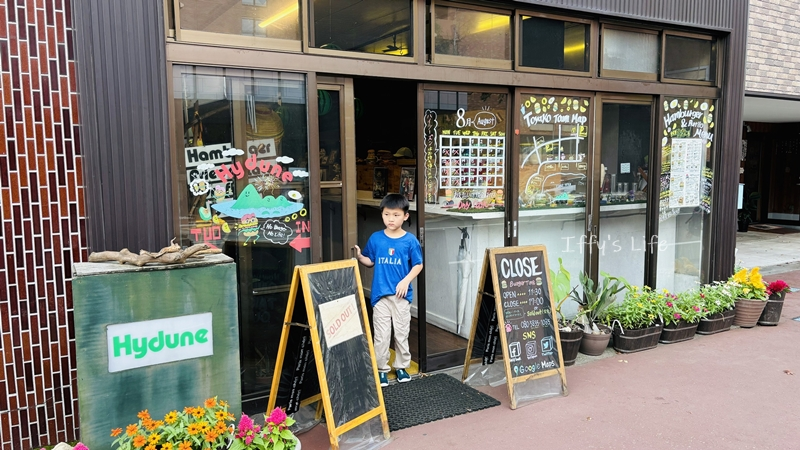
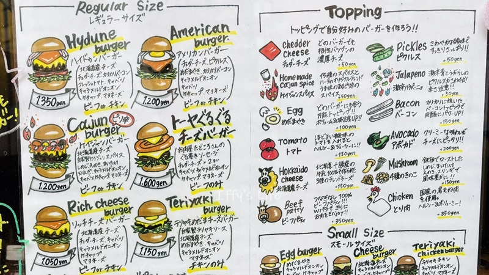
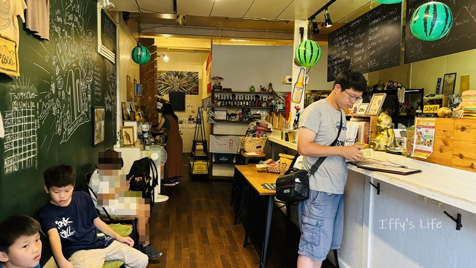
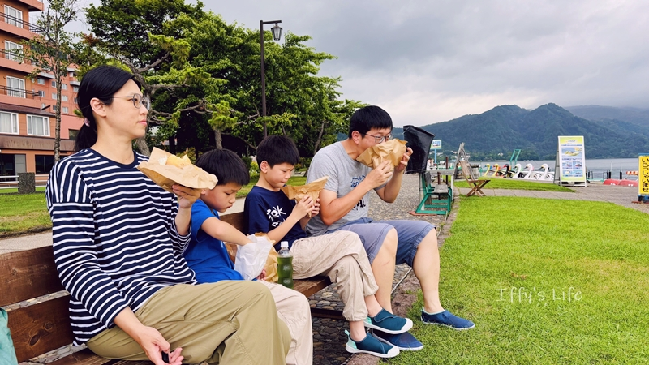
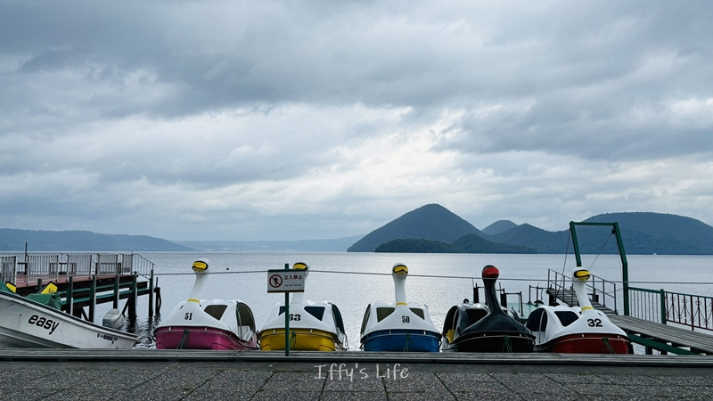
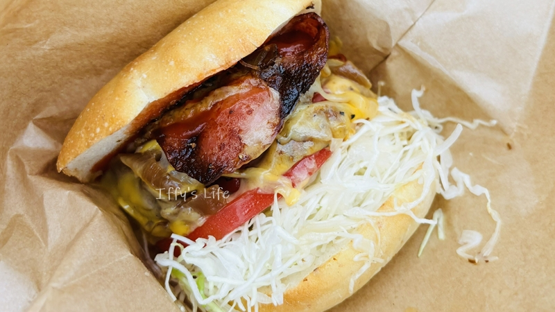
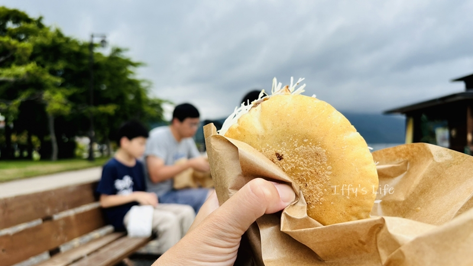
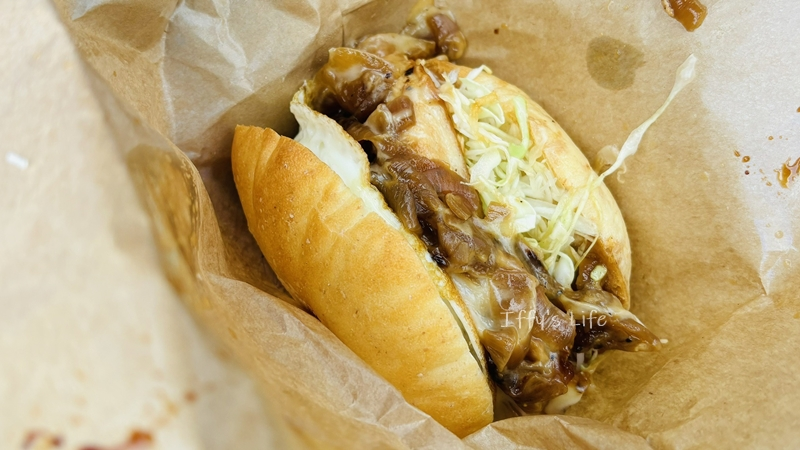
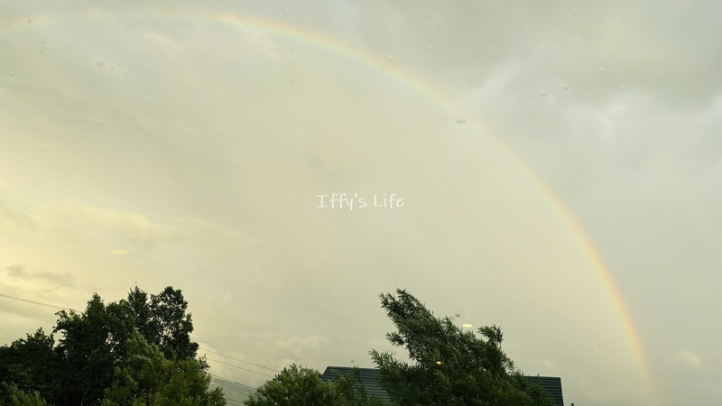
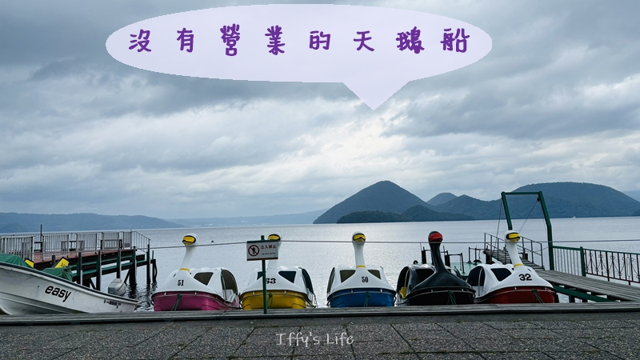
下午三點從太陽宮出來後，飢腸轆轆，阿光在google map上找了這家評價看起來很好，下午又沒休息的漢堡店 -
Hydune。雖然google map上寫營業到下午5:00，
但是我們大概3:30來的時候牛的部分只剩最後一份牛肉漢堡，
因此點了一牛二雞，漢堡種類好多，一時之間也是很難選擇，點了招牌的牛肉漢堡 - Hydune
Burger(￥1350)，和兩種不同的雞肉漢堡，現點現做，等了好一陣子之後，外帶到洞爺湖邊享用啦！我們點完餐之後店家就提早打烊關店了！真的是好險。
麵包的部分使用的是比較乾硬一點的圓麵包(有一點像法式圓麵包)，我還蠻喜歡的，比較不會一下子就被醬汁弄得濕濕爛爛，特別的是生菜的部分是用高麗菜絲！
允寶不愛，只吃肉和蛋，因為從11點玩水到3點、他已經累了，很沒活力的樣子。
味道的話還是最喜歡牛肉漢堡，雞肉還是比較乾一點，但是照燒雞肉醬汁比較香和濃稠，
所以也不錯吃！點漢堡會附薯塊，含皮炸的，飲料我們自己去隔壁7-11買可樂來配。吃得超級滿足。
晚上看完煙火再次經過漢堡店時，感覺在備料，因為店裡亮著燈，然後傳來陣陣香味，央央再度回味起下午吃的牛肉漢堡，說那牛肉真的很好吃。
(三個漢堡含薯塊總共￥3550)，比之前在青池附近的休息站吃到的
BETWEEN THE BREAD，價格便宜一半耶！
在湖邊坐了一陣子，天氣陰陰的感覺要下雨的樣子。央央一直非常想玩天鵝船，但不知為什麼今天沒有營業！想騎腳踏車也沒有，央央很失望。決定打道回villa放空休息。
果然不久之後便下起大雨，但是雨停後出現美麗的彩虹！！